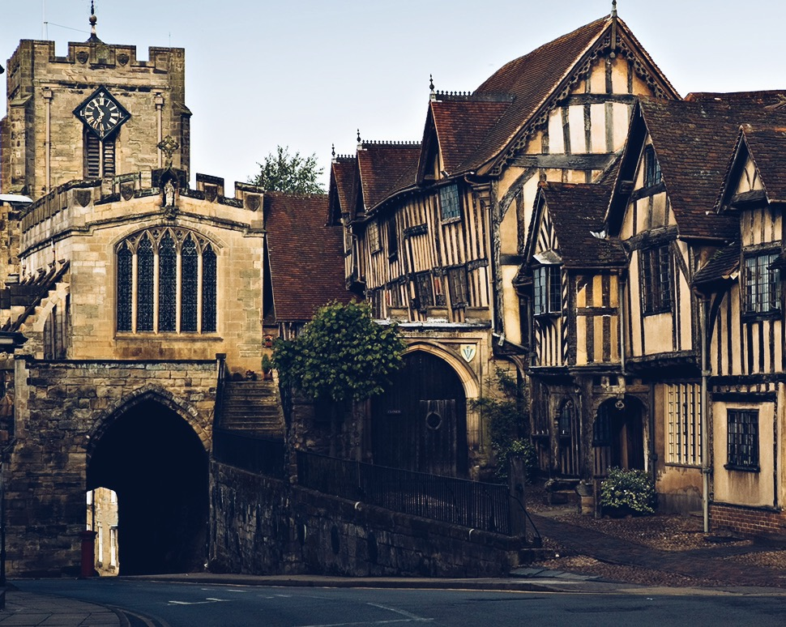

Towns nearby the University provide you with many shops, restaurants and activities.
Coventry
Coventry is a city in the West Midlands. It is the 9th largest in the country and the 12th largest in the United Kingdom. The city enjoys close proximity to some of the UK's biggest cities London and Birmingham, with travel times by train ranging from an hour to 20 minutes, respectively. The Coventry city centre is approximately 20 minutes from the university by bus.
Leamington Spa
Royal Leamington Spa, more commonly known as Leam to locals is a town in Warwickshire. 30 minutes away from Birmingham and 90 from London, Leamington is a lovely town with a lot of second and third year students choosing to live here, with a wide range of restaurants and locals. It is 25 minutes away from the University by bus.
Warwick

Warwick is the county town of Warwickshire. Famed for its Castle, which is a popular tourist attraction, Warwick is a great day trip from the University. It is easiest to get there from campus by a taxi, which can be called at the University's Bus Interchange.
Walks around campus
The nature of campus means that youre only seconds away from nature...
Between Sherbourne and Cryfield
Outside Heronbank
Tocil Woods
Transport
There are multiple ways to get around campus to nearby towns Coventry, Kenilworth and Leamington Spa...here are some of the most common
11 (National Express Coventry)- this takes you from the centre of Coventry to the Coventry rail station, through to the University, Kenilworth and ends and Leamington. Every 15 minutes Monday-Fridays.
12X (National Express Coventry) fast way to get from central campus to the Coventry rail station. Every 15 minutes Monday- Fridays
U1 (Stagecoach) From the University to Leamington Spa. Every 7-8 minutes Mondays- Fridays.
U17 (Stagecoach) From the University of Leamington Spa, via Kenilworth. Mondays- Sundays.
Uber is now available in the Coventry area. Cars are hard to come by, but not impossible to find.
Taxis are constantly available by the University's main bus interchange.
ABOUT
Top six things you should do and try
Purple You can try the renowed Warwick drink at all the University Bars (Dirty Duck, Terrace Bar, Bar Fusion, the Copper Rooms)
Jephson Gardens is in Leamington Spa and is a lovely place to spend your day relaxing with friends, or for a nice picnic during the sunny day.
Curiositea is a cafe by the Rootes building and is a great place to catch up with friends and do some reading.
The Warwick Arts Centre is a multi-purpose venue in the heart of the campuses which regularly hosts musicians, comedians and plays alike. Check their website for show listings.
Ice skating and Planet Ice is something you can do in Coventry city centre, all year round. It is a great way to spend quality time with your friends!
Explore! The university is situated in an ideal place, with transport links to many cities, but is also surrounded by lots of nature. Take a walk on a spontaneous route or follow the many walking trails the University offers!